Permutations and Combinations Class 11 Maths NCERT Solutions are extremely helpful while doing your homework. NCERT Solutions for Class 11 Maths Chapter 7 Permutations and Combinations All Exercises were prepared by Experienced LearnCBSE.in Teachers.
Free download NCERT Solutions for Class 11 Maths Chapter 7 Permutations and Combinations Ex 7.1, Ex 7.2, Ex 7.3 , Ex 7.4 and Miscellaneous Exercise PDF in Hindi Medium as well as in English Medium for CBSE, Uttarakhand, Bihar, MP Board, Gujarat Board, BIE, Intermediate and UP Board students, who are using NCERT Books based on updated CBSE Syllabus for the session 2019-20.
- Permutations and Combinations Class 11 Ex 7.1
- Permutations and Combinations Class 11 Ex 7.1 in Hindi Medium
- Permutations and Combinations Class 11 Ex 7.2
- Permutations and Combinations Class 11 Ex 7.3
- Permutations and Combinations Class 11 Ex 7.4
- Permutations and Combinations Class 11 Miscellaneous Exercise
- क्रमचय और संचयं प्रश्नावली 7.2 का हल हिंदी में
- क्रमचय और संचयं प्रश्नावली 7.3 का हल हिंदी में
- क्रमचय और संचयं प्रश्नावली 7.4 का हल हिंदी में
- क्रमचय और संचयं विविध प्रश्नावली का हल हिंदी में
- Permutations and Combinations Class 11 Notes
- NCERT Exemplar Class 11 Maths Permutations and Combinations
- JEE Main Mathematics Permutations and Combinations Previous Year Questions
NCERT Solutions for Class 11 Maths Chapter 7 Permutation and Combinations
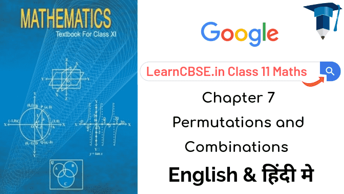
Topics and Sub Topics in Class 11 Maths Chapter 7 Permutation and Combinations:
| Section Name | Topic Name |
| 7 | Permutations and Combinations |
| 7.1 | Introduction |
| 7.2 | Lundamental Principle of Counting |
| 7.3 | Permutations |
| 7.4 | Combinations |
NCERT Solutions for Class 11 Maths Chapter 7 Exercise.7.1
Ex 7.1 Class 6 Maths Question-1
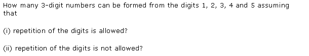
Ans.
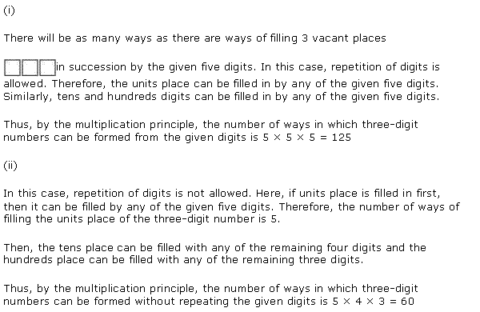
Ex 7.1 Class 6 Maths Question-2
Ans.
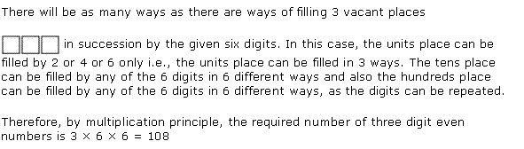
More Resources for CBSE Class 11
- NCERT Solutions
- NCERT Solutions Class 11 Maths
- NCERT Solutions Class 11 Physics
- NCERT Solutions Class 11 Chemistry
- NCERT Solutions Class 11 Biology
- NCERT Solutions Class 11 Hindi
- NCERT Solutions Class 11 English
- NCERT Solutions Class 11 Business Studies
- NCERT Solutions Class 11 Accountancy
- NCERT Solutions Class 11 Psychology
- NCERT Solutions Class 11 Entrepreneurship
- NCERT Solutions Class 11 Indian Economic Development
- NCERT Solutions Class 11 Computer Science
Ex 7.1 Class 6 Maths Question-3
Ans.
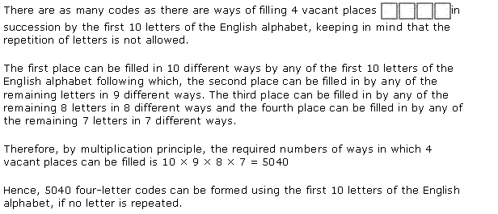
Ex 7.1 Class 6 Maths Question-4
Ans.
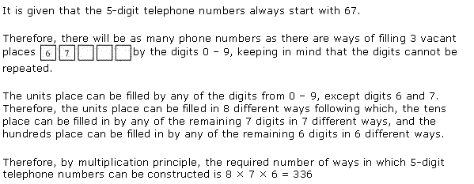
Ex 7.1 Class 6 Maths Question-5
Ans.
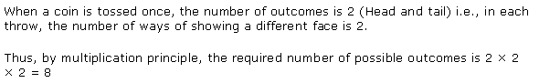
Ex 7.1 Class 6 Maths Question-6
Ans.
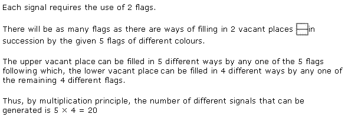
NCERT Solutions for Class 11 Maths Chapter 7 Permutations and Combinations (क्रमचय और संचयं) Hindi medium Ex 7.1

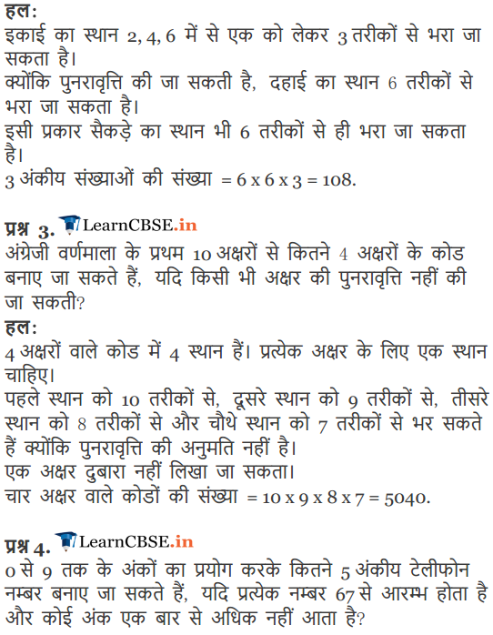
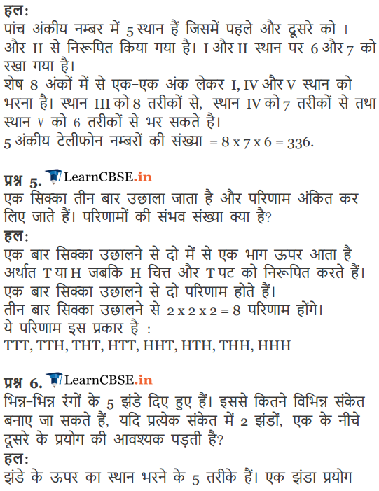
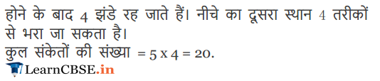
NCERT Solutions for Class 11 Maths Chapter 7 Exercise.7.2
Ex 7.2 Class 11 Maths Question-1
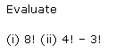
Ans.
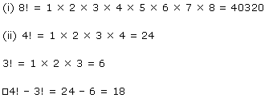
Ex 7.2 Class 11 Maths Question-2
Ans.
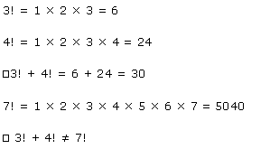
Ex 7.2 Class 11 Maths Question-3
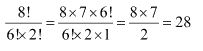
Ans.
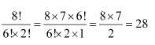
Ex 7.2 Class 11 Maths Question-4
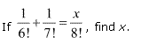
Ans.
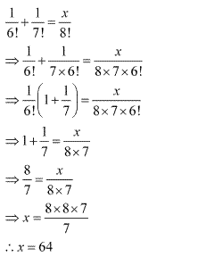
Ex 7.2 Class 11 Maths Question-5
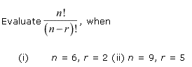
Ans.
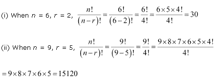
NCERT Solutions for Class 11 Maths Chapter 7 Exercise 7.3
Ex 7.3 Class 11 Maths Question-1
Ans.
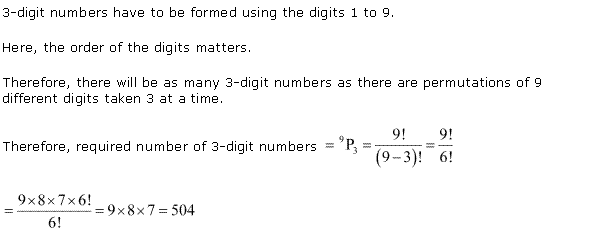
Ex 7.3 Class 11 Maths Question-2
Ans.
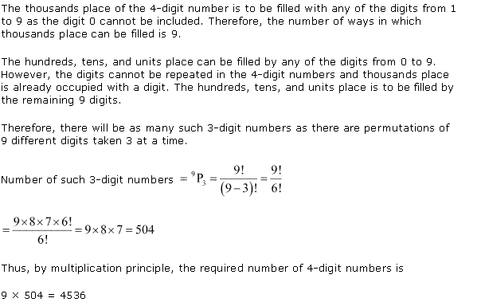
Ex 7.3 Class 11 Maths Question-3
Ans.
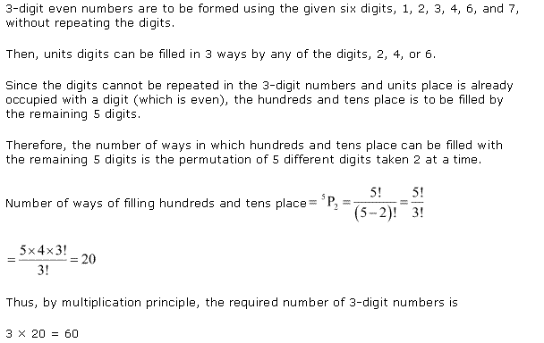
Ex 7.3 Class 11 Maths Question-4
Ans.
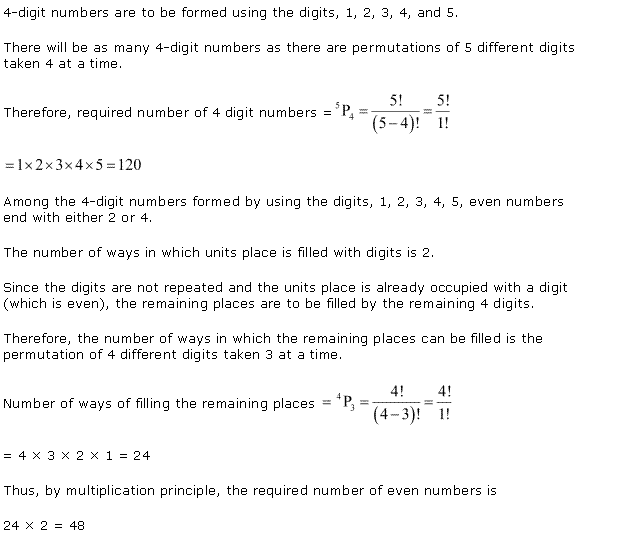
Ex 7.3 Class 11 Maths Question-5
Ans.
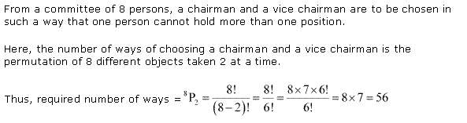
Ex 7.3 Class 11 Maths Question-6
Ans.
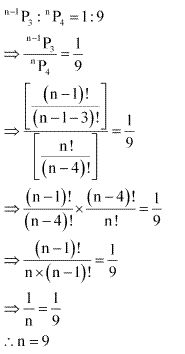
Ex 7.3 Class 11 Maths Question-7
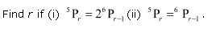
Ans.
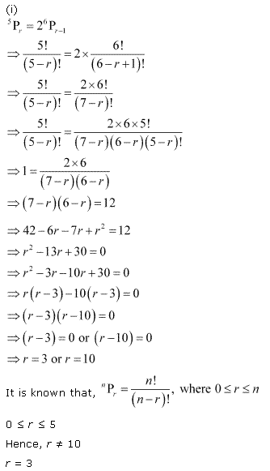
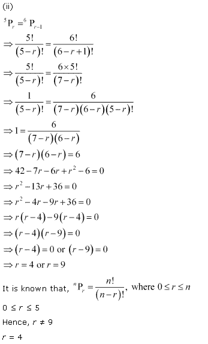
Ex 7.3 Class 11 Maths Question-8
Ans.
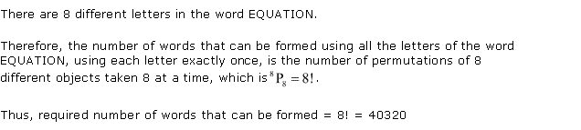
Ex 7.3 Class 11 Maths Question-9
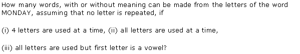
Ans.
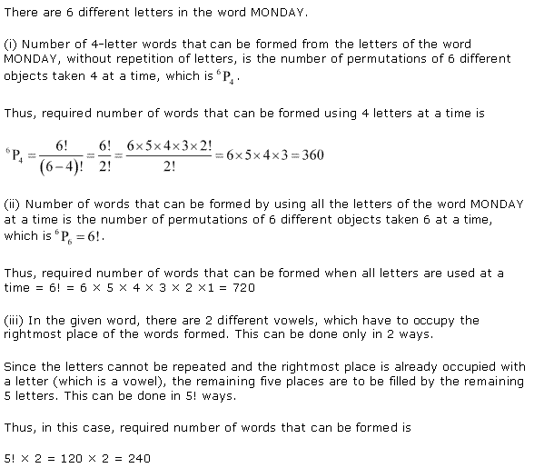
Ex 7.3 Class 11 Maths Question-10
Ans.
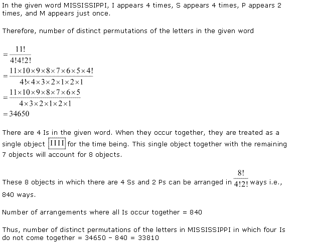
Ex 7.3 Class 11 Maths Question-11
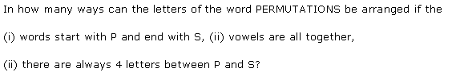
Ans.
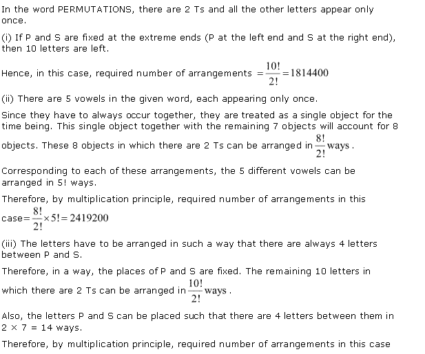
NCERT Solutions for Class 11 Maths Chapter 7 Exercise.7.4
Ex 7.4 Class 11 Maths Question-1
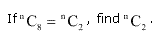
Ans.
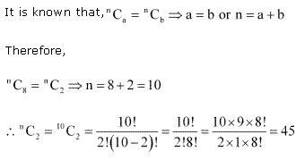
Ex 7.4 Class 11 Maths Question-2
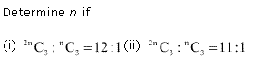
Ans.
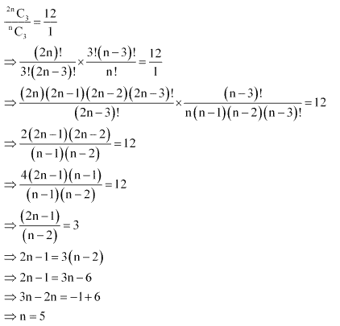
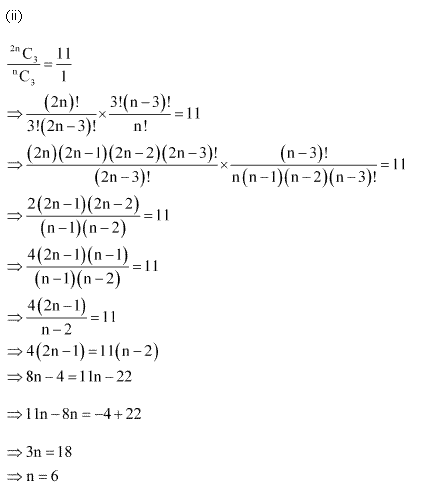
Ex 7.4 Class 11 Maths Question-3
Ans.
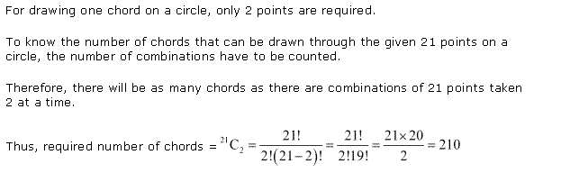
Ex 7.4 Class 11 Maths Question-4
Ans.
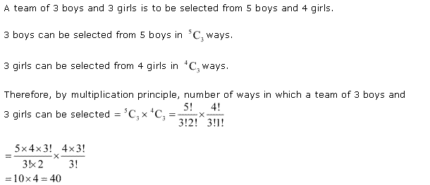
Ex 7.4 Class 11 Maths Question-5
Ans.
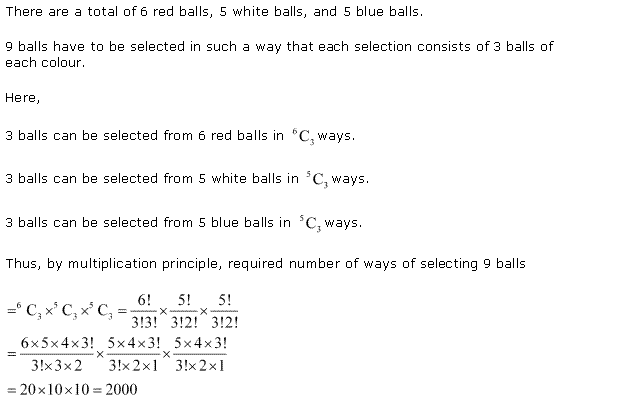
Ex 7.4 Class 11 Maths Question-6
Ans.
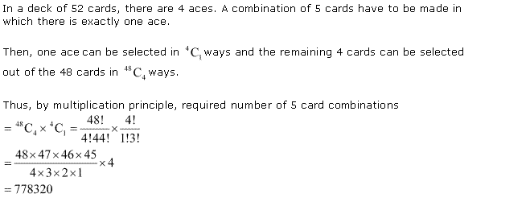
Ex 7.4 Class 11 Maths Question-7
Ans.
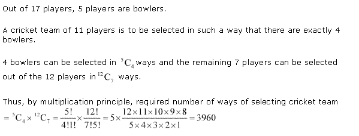
Ex 7.4 Class 11 Maths Question-8
Ans.
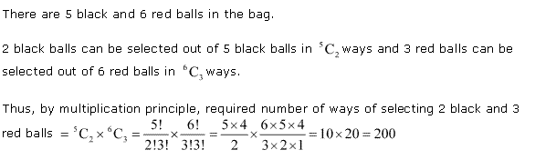
Ex 7.4 Class 11 Maths Question-9
Ans.
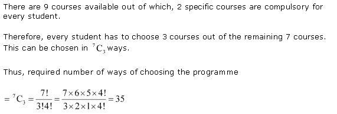
NCERT Solutions for Class 11 Maths Chapter 7 Miscellaneous Solutions
Miscellaneous Exercise Class 11 Maths Question-1
Ans.
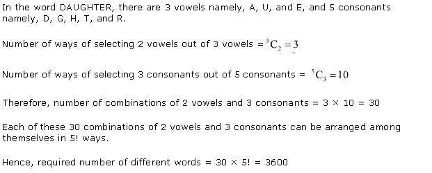
Miscellaneous Exercise Class 11 Maths Question-2
Ans.
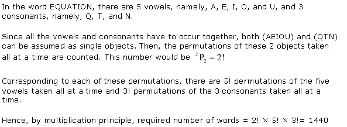
Miscellaneous Exercise Class 11 Maths Question-3
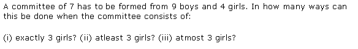
Ans.
Miscellaneous Exercise Class 11 Maths Question-4
Ans.
Miscellaneous Exercise Class 11 Maths Question-5
Ans.
Miscellaneous Exercise Class 11 Maths Question-6
Ans.

Miscellaneous Exercise Class 11 Maths Question-7
Ans.
Miscellaneous Exercise Class 11 Maths Question-8
Ans.
Miscellaneous Exercise Class 11 Maths Question-9
Ans.
Miscellaneous Exercise Class 11 Maths Question-10
Ans.
Miscellaneous Exercise Class 11 Maths Question-11
Ans.
NCERT Solutions for Class 11 Maths Chapter 7 Permutations and Combinations Ex 7.1 in Hindi Medium
प्रश्नावली 7.1
Ex 7.1 Class 11 Maths प्रश्न 1.
अंक 1, 2, 3, 4 और 5 से कितनी 3 अंकीय संख्याएँ बनाई जा सकती हैं, यदि
(i) अंकों की पुनरावृत्ति की अनुमति हो।
(ii) अंकों की पुनरावृत्ति की अनुमति नहीं हो।
हल:
3 अंकीय संख्या में 3 स्थान होते हैं : इकाई, दहाई और सैकड़ा।
(i) इकाई का स्थान 5 तरीकों से भरा जा सकता है क्योंकि 1, 2, 3, 4, 5 में से कोई भी एक अंक लिया जा सकता है।
दहाई का स्थान भी 5 तरीकों से भरा जा सकता है क्योंकि पुनरावृत्ति की अनुमति है।
1, 2, 3, 4, 5 में से कोई भी अंक लिया जा सकता है।
इसी प्रकार सैकड़े का स्थान भी 5 तरीकों से भरा जा सकता है।
3 अंकीय संख्याओं की संख्या = 5 x 5 x 5 = 125.
(ii) इकाई का स्थान 1, 2, 3, 4, 5 में से कोई-से एक अंक को लेकर 5 तरीकों से भरा जा सकता है।
दहाई का स्थान 4 तरीकों से भरा जा सकता है क्योंकि एक अंक पहले ही चयनित कर लिया गया। पुनरावृत्ति की अनुमति नहीं है।
सैकड़े का स्थान 3 तरीकों से भरा जा सकता है क्योंकि 2 अंक पहले ही चयनित कर लिए गए हैं।
3 अंकीय संख्याओं की संख्या = 5 x 4 x 3 = 60.
Ex 7.1 Class 11 Maths प्रश्न 2.
अंकः1, 2, 3, 4, 5, 6 से कितनी 3 अंकीय सम संख्याएँ बनाई जा सकती हैं, यदि अंकों की पुनरावृत्ति की जा सकेती है?
हल:
इकाई का स्थान 2, 4, 6 में से एक को लेकर 3 तरीकों से भरा जा सकता है।
क्योंकि पुनरावृत्ति की जा सकती है, दहाई का स्थान 6 तरीकों से भरा जा सकता है।
इसी प्रकार सैकड़े का स्थान भी 6 तरीकों से ही भरा जा सकता है।
3 अंकीय संख्याओं की संख्या = 6 x 6 x 3 = 108.
Ex 7.1 Class 11 Maths प्रश्न 3.
अंग्रेजी वर्णमाला के प्रथम 10 अक्षरों से कितने 4 अक्षरों के कोड बनाए जा सकते हैं, यदि किसी भी अक्षर की पुनरावृत्ति नहीं की जा सकती?
हल:
4 अक्षरों वाले कोड में 4 स्थान हैं। प्रत्येक अक्षर के लिए एक स्थान चाहिए।
पहले स्थान को 10 तरीकों से, दूसरे स्थान को 9 तरीकों से, तीसरे स्थान को 8 तरीकों से और चौथे स्थान को 7 तरीकों से भर सकते हैं क्योंकि पुनरावृत्ति की अनुमति नहीं है।
एक अक्षर दुबारा नहीं लिखा जा सकता।
चार अक्षर वाले कोडों की संख्या = 10 x 9 x 8 x 7 = 5040.
Ex 7.1 Class 11 Maths प्रश्न 4.
0 से 9 तक के अंकों का प्रयोग करके कितने 5 अंकीय टेलीफोन नम्बर बनाए जा सकते हैं, यदि प्रत्येक नम्बर 67 से आरम्भ होता है और कोई अंक एक बार से अधिक नहीं आता है?
हल:
पांच अंकीय नम्बर में 5 स्थान हैं जिसमें पहले और दूसरे को I और II से निरूपित किया गया है। I और II स्थान पर 6 और 7 को रखा गया है।
शेष 8 अंकों में से एक-एक अंक लेकर I, IV और V स्थान को भरना है। स्थान III को 8 तरीकों से, स्थान IV को 7 तरीकों से तथा स्थान V को 6 तरीकों से भर सकते है।
5 अंकीय टेलीफोन नम्बरों की संख्या = 8 x 7 x 6 = 336 .
Ex 7.1 Class 11 Maths प्रश्न 5.
एक सिक्का तीन बार उछाला जाता है और परिणाम अंकित कर लिए जाते हैं। परिणामों की संभव संख्या क्या है?
हल:
एक बार सिक्का उछालने से दो में से एक भाग ऊपर आता है अर्थात T या H जबकि H चित्त और T पट को निरूपित करते हैं।
एक बार सिक्का उछालने से दो परिणाम होते हैं।
तीन बार सिक्का उछालने से 2 x 2 x 2 = 8 परिणाम होंगे।
ये परिणाम इस प्रकार है :
TTT, TTH, THT, HTT, HHT, HTH, THH, HHH
Ex 7.1 Class 11 Maths प्रश्न 6.
भिन्न-भिन्न रंगों के 5 झंडे दिए हुए हैं। इससे कितने विभिन्न संकेत बनाए जा सकते हैं, यदि प्रत्येक संकेत में 2 झंडों, एक के नीचे दूसरे के प्रयोग की आवश्यक पड़ती है?
हल:
झंडे के ऊपर का स्थान भरने के 5 तरीके हैं। एक झंडा प्रयोग होने के बाद 4 झंडे रह जाते हैं। नीचे का दूसरा स्थान 4 तरीकों से भरा जा सकता है।
कुल संकेतों की संख्या = 5 x 4 = 20.
Exercise- 7.1
Q-1: Form 3- digit numbers by using digits 4, 5, 6, 7 and 8 and assume that
(i) The digits can be repeated.
(ii) Digits can’t be repeated in the 3- digit number.
Q-2: Form a 3- digit number which should be even by using 1, 2, 3, 6, 8, and 9. Note that, repetition of digits is allowed.
Q-3: Find the total number of 4- letter code formed by using the 10 English alphabets, i.e., a, b, c, d, e, f, g, h, i and j. Assume that the repetition of the letters of English alphabet is not allowed.
Q-4: Find the total number of 5- digit telephone numbers formed by using the numbers from 0 to 9. Note that, each of the telephone number will start with 36 and the repetition of the numbers is not allowed.
Q-5: Consider a scenario when a person tosses a coin. He tosses the coin for two times and every time the outcome of the toss is recorded by one of his friend. Find the total number of possible outcomes of the coin his friend will record.
Q-6: Consider 5 flags which are of different colors. Find the total possibility of getting different signals. Note that, each of the signals requires the use of any two flags at the same time, one after the other.
EXERCISE- 7.2
Q-1: Evaluate:
(i). 8! (ii). 4! – 3!
Q-2: Is 3! + 4! = 7! ?
EXERCISE – 7.3
Q-1: If there is no repetition of numbers, then find the total of 3- digit numbers formed by using digits from 2 to 9.
Q-2: Find the total number of 4- digits numbers where there is no repetition of digits.
Q-3: Find the total number of 3- digit number which is even and is formed by using the digits 2, 3, 4, 5, 6, 7 and 8. Note that repetition of digit is restricted.
Q-4: How many 4- digit numbers will be formed by using the digits 2, 3, 4, 5 and 6. Note that, repetition of digits is not allowed. Find among those numbers, how many numbers will be even number?
Q-5: Consider a committee with 9 persons, in how many ways can we choose a chairman and a vice chairman? Note that, a person can hold only one position at a time.
Q-8: Get all the number of ways, with or without the meaning, which might be formed by using the letters from the word EQUATION. Note that, repetition of the word is restricted.
Q-9: Find the number of words, with or without the meaning, which might be formed by using the letters from the word MONDAY. Note that, repetition of the word is restricted, if
(i) At a time, 3 letters can be used.
(ii) All the letters can be used at a time.
(iii) First letter is a vowel and all the letters are being used.
Q-10: Find the number of distinct permutations such that 4 I’s does not come together in the word MISSISSIPPI.
Q-11: Arrange the letters of the word PERMUTATIONS and observe the number of ways of the permutation if,
(i). the new word starts with P and ends with S.
(ii). when the vowels are taken all together.
(iii). there will always be 4 letters between P and S.
EXERCISE – 7.4
Q-3: Find total number of chords which can be drawn through 21 points on the circle.
Q-4: Find the number of ways in which a team of 2 boys and 2 girls can be selected from the group of 5 boys and 4 girls.
Q-5: In how many ways will 9 balls be selected from 7 red balls, 6 blue balls and 5 white balls if every time 3 balls of different colors be selected?
Q-6: Find out the number of combinations of 5 cards from a deck of 52 cards. Assume that there is at least one ace in each of the combinations.
Q-7: Find the number of ways by which one can select a cricket team of 11 players from a bunch of 17 players among which only 5 players can bowl if every cricket team of 11 players must have exactly 4 bowlers.
Q-8: There are 6 black and 5 red balls. Find the number of ways through which 3 black and 3 red balls will be selected.
Q-9: Find the number of ways by which a student can choose a program of 5 courses, if there are options of 10 courses and for every student 2 courses are made compulsory.
MISCELLANEOUS EXERCISE
Q-1: Find the number of words, having meaning or meaningless, each of 2 vowels and 4 consonants will be formed by the letters of the word DAUGHTER?
Q-2: Find the number of words, which can be either meaningful or meaningless, which will be formed by using all of the letters of the word EQUATION at a time such that both the vowel and the consonant will occur together.
Q-3: There are 10 boys and 5 girls through which a committee with 7 members has to be formed. Now, find the number of ways in which this might be created when the committee formed consists of:
(i) Exactly 4 girls (ii) at least 4 girls (iii) almost 4 girls?
Q-4: In a dictionary, the permutation of the letters of the word EXAMINATION is listed, then find the total number of words in the list of dictionary before the first letter of the word start with E.
Q-5: Find the total number of 6- digit numbers formed by using the digits 0, 2, 3, 4, 5 and 6 which should be divisible by 10. Note that, the repetition of digit is not allowed.
Q-6: It is known that the English alphabet has 21 consonants and 5 vowels. Find the number of words formed with 4 different consonants and 3 different vowels from the English alphabet.
Q-7: There are 12 questions in the question paper of an examination which is mainly divided into two parts, say, part-I and part-II, each having 4 and 8 questions, respectively. There is a condition given in the question paper that the student has to attempt at least 8 questions for sure, selection 3 from each section. Now, find the number of ways in which a student can select the questions in the question paper.
Q-8: Find the number of ways of 5- card combinations from a deck of 52 cards. Note that, among those 5 cards, there must be exactly one king in the combination.
Q-9: Consider a situation in which 7 men and 6 women needs to be seated in a row in such a way that the women will occupy the even places.
Q-10: There are 20 students in a class from which 8 students will be chosen for an exclusion party. 3 students from the class decided that either they will join combinely or none of them will go for the exclusion party. Find the number of ways by which the exclusion party will be chosen.
Q-11: Arrange ASSASSINATION in such a way that all the S’s are filled together. Find the number ways for the arrangement of S’s together.
NCERT Solutions for Class 11 Maths All Chapters
- Chapter 1 Sets
- Chapter 2 Relations and Functions
- Chapter 3 Trigonometric Functions
- Chapter 4 Principle of Mathematical Induction
- Chapter 5 Complex Numbers and Quadratic Equations
- Chapter 6 Linear Inequalities
- Chapter 7 Permutation and Combinations
- Chapter 8 Binomial Theorem
- Chapter 9 Sequences and Series
- Chapter 10 Straight Lines
- Chapter 11 Conic Sections
- Chapter 12 Introduction to Three Dimensional Geometry
- Chapter 13 Limits and Derivatives
- Chapter 14 Mathematical Reasoning
- Chapter 15 Statistics
- Chapter 16 Probability